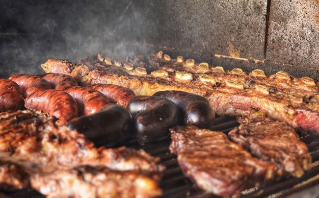

Meat, especially beef, cooked over coals on a spit or grill. Dish consisting of meat, offal or roasted sausages, served with various garnishes.

Ingredients
2½ kg meat flank steak, flap, skirt steak, tenderloin. But always choose the ribs and a cut of meat
6 chorizo sausages
400 g chinchulines chinchulines is a term that makes reference to the offal of the cow such as the small intestine, kidneys and sweetbread. Black pudding is usually considered in this group too
2 lemons
coarse salt
marinade optional if using kidneys
Steps
Before you start, soak the chorizos in bowl until you are ready to cook them. This is to prevent dryness after cooking.
Make a fire using charcoal, wood and paper. This would probably take you around an hour.
Once you have the fire ready, distribute the embers so you have a high heat and a low heat area. Sprinkle some salt on top of the embers to prevent the ashes from rising too much.
Keep to the side a small additional fire going from where you can take embers to put in the main fire when needed.
Put the meat on the grill, fat side down and let it cook for at least 40 min - one hour, turning the meat every 15 or 20 minutes.
Place the ribs on the grill. They are ready in 15 - 20 minutes.
When the meat is ready, cut it in portions and put them in a large plate so everyone can choose what they want.